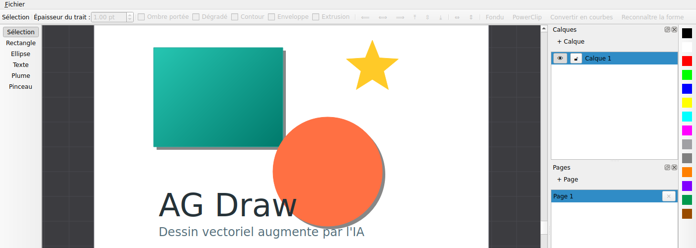

Des outils de dessin complets
- Sélection & redimensionnement
- Rectangle et ellipse
- Texte multi-lignes
- Plume, avec courbes de Bézier
- Pinceau à pression de tablette graphique
Dessin vectoriel professionnel
AG Draw n'a pas pour objectif de cloner CorelDRAW — mais de s'appuyer sur la même base d'outils professionnels pour aller plus loin : transformer une phrase en dessin, un croquis en tracé propre, et corriger automatiquement les formes imparfaites.

Les fondamentaux d'un logiciel de dessin vectoriel professionnel, du premier tracé à l'export prêt pour l'impression.
.agd et export PNGCe qu'aucun autre logiciel de dessin ne fait
Deux chantiers déjà livrés, par des moyens algorithmiques réels et transparents — pas de boîte noire, pas de service externe requis.
« Convertir en courbes » extrait les contours réels de la police et les transforme en formes vectorielles pleinement éditables, y compris les lettres à trou comme « O », « A » ou « e ».
Tracez à main levée au pinceau : la reconnaissance géométrique identifie un cercle ou un carré approximatif et le remplace par une ellipse ou un rectangle parfaitement propre.
AG Draw se construit étape par étape, chaque brique testée avant de passer à la suivante.
Moteur de dessin, outils, calques, effets, pages multiples, automatisation, vectorisation bitmap et production print.
Texte → vecteur et croquis → vecteur livrés. La suite du chantier se poursuit.
Windows, macOS, Linux, Android et Web, avec ouverture des formats SVG, PDF et autres formats populaires.